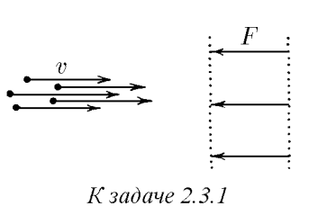

Условие:
\(2.3.1.\) Пучок заряженных частиц различной массы, имеющих одну и туже скорость $v$, направили по нормали к двум сеточным электродам, между которыми на каждую частицу действует одна и та же сила $F$. При какой наименьшей массе частиц в пучке все они достигнут второй сетки, если ширина зазора между электродами равна $l$?

Решение:
По условию задачи требуется найти наименьшую массу частиц в пучке при которой все они достигнут второй сетки. Тогда работа силы между сеточными электродами на расстоянии $l$ равна изменению кинетической энергии частиц
здесь учтено, что работа силы $F$ отрицательна, а изменение кинетической энергии $\Delta E_k = 0 - \frac{mv^2}{2}$
Тогда минимальная масса частиц
Примечание: задачу можно решить динамически, через импульс силы. Попробуйте самостоятельно прийти к ответу.